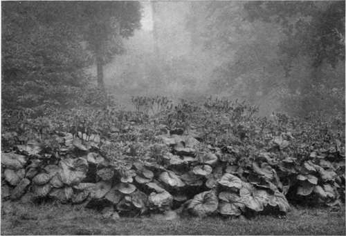
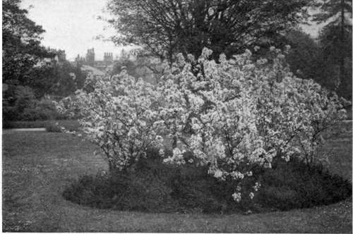
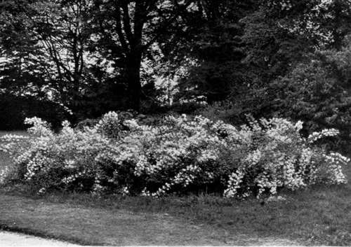
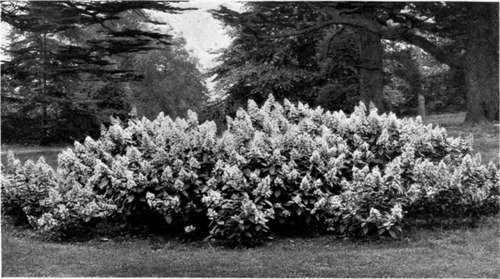

Chapter XXIV. England's New Kind Of Flower Bed
Description
This section is from the book "What England Can Teach Us About Gardening", by Wilhelm Miller. Also available from Amazon: What England Can Teach Us About Gardening.
Chapter XXIV. England's New Kind Of Flower Bed
It harmonizes with our climate better than our present plan, costs less, is attractive two months longer every year and abolishes annual digging and replanting.
IF THERE is any one thing on which we Americans pride ourselves it is on being "up-to-date," or at least progressive, yet the style of flower bedding we commonly affect belongs to the same period as "hoop skirts, haircloth sofas, corkscrew curls, infant damnation, and b'iled dinners." I refer to that "aberration of the human mind," carpet bedding, of which William Morris said he "could not think, even when quite alone, without a blush of shame".
For it is a shame to shear plants unnecessarily, thus sacrificing all their natural beauty of form. It is a shame to banish or minimize flowers. It is a shame to consider the most complicated designs the most elegant. And it is a shame to get colour in such a crude and gaudy way when we can have material that will harmonize with our climate and environment. Or, in practical language, tender plants cost more than hardy ones, and carpet beds are empty and unsightly for at least seven twelfths of the year, from the first frost of autumn to the last one of spring.
William Robinson has changed the face of England by inducing people to sweep away most of this false art and restore hardy plants on a new and better basis. We have never had in America any such revolution in gardening because we have only begun to have gardens. But every foot of England was, broadly speaking, cultivated to the utmost then, as now, so that the land was filled with old and precious gardens. This beauty was suddenly defaced when the bedding mania swept all hardy flowers out of many old gardens and transformed England into one gigantic crazy quilt. It is only faint echoes of all this that come to us in books. I used to think such talk merely "literary." But everywhere in England last summer I heard about "the real thing" from old men, who were refused admission to flower shows for their larkspurs, peonies, irises, and other hardy flowers. And on many fine estates I heard of great sums wasted in trying and discarding the bedding system.
Yet there was really some sense in the bedding system in the early forties. China and Japan had not been opened to the world and, therefore, about one half of the best hardy plants now cultivated were then unknown. Moreover, hardy plants, as a rule, bloom only two weeks, whereas geraniums, verbenas, and annual phlox will bloom for three months. It is no wonder that the gardeners tired of the hardy flowers then known, because many of them were unsightly, or at least commonplace, in foliage. For instance, the foliage becomes shabby in forget-me-nots, columbines, and sweet williams after these have bloomed; it is rather coarse and weedy in foxgloves and hollyhocks; subject to disease in phlox and larkspurs; commonplace in asters and gaillardias; and often disappears after blooming, as in the case of Oriental poppies.
Another reason why the old gardeners sickened of hardy plants is that the ordinary mixed border was not then, and is not now, artistic. They used to "dot" and "repeat," i. e., use the same kind of plant singly in all parts of the border, the effect of which is generally weak and spotty. Nowadays we understand better that the only way to get strong, pure effects is to plan first for a few large masses.
SENECIO CLIVORUM, WHICH HAS BOLD FOLIAGE AND YELLOW FLOWERS. THESE LEAVES ARE OFTEN TWO FEET ACROSS. OTHERS OF THIS CLASS ARE THE ORNAMENTAL RHUBARBS, CRAMBE, SENECIO BIEBERSTEINII, ETC. See pages 292,327.
A BED OF JAPANESE FLOWERING CRAB CARPETED WITH EVERGREEN HEATH. THF COUNTLESS WHITE DOTS IN THE LAWN ARE ENGLISH DAISIES, WHITE, SINGLE, HALF AN INCH ACROSS (Pyrus jloribunda var. Scheideckert).
A BED OF PHI LAD EL PH US LEMOINEI, SHOWING THE ARCHING GRACE AND STEMS COVERED NEARLY THEIR WHOLE LENGTH WITH FLOWERS. WE NOW HAVE A DOZEN LOW SHRUBS WITH THE SAME FAULTLESS HABIT. See pages 278, 313.
THE "CONTINUOUS-BLOOMING EFFECT"- HARDY HYDRANGEAS. OTHERS THAT WILL BLOOM TWO OR three months ARE BABY RAMBLER ROSE, GAIL LARD IAS, THE NAPOLEON III. PINK, MISS LINGARD PHLOX, ETC. See page311.
So we cannot blame the old gardeners for preferring three months of bloom to two weeks. But the next step they took is hard to forgive, because tender foliage plants that have no beauty, save colour, are the most ignoble type of vegetation. I do not deny that coleus will give more colour for the money than any other plant that grows, and it submits with lamb-like grace to the shears. But so will billboards give colour — and twelve months, too, instead of five. A plant without growth, flower, or fruit is like a man without character. Carpet bedding becomes insufferably monotonous. It may be justified in small public parks, where people would steal flowers, but to make it the dominant feature of a private estate is really "a case for the blue wagon".
There are many disciples of William Robinson who go farther than the master. They cry, "Away with tender plants and carpet bedding!" and talk as if there were something high and holy about hardy plants per se. I do not believe in going to extremes in anything, and I defy any shouter for "old-fashioned flowers" to name any hardy plant that will do as much for the money as the geranium. Here we have good colour, three months of bloom, beauty of form in leaf and flower, fragrance, and extraordinary ease of culture. It is not necessary to use the varieties with piercing colours and leaves marked like Joseph's coat, for even the geranium is capable of quiet and cool effects.
In other words, tender bedding plants are not wrong in themselves, as many writers say; it is only the abuse of the bedding system that is wrong. Even in a private garden, a few beds of tender plants are usually desirable, because every garden needs at least one spot of colour every day throughout the growing season, and I gladly acknowledge that tender plants will usually solve this problem better than hardy ones.
But now that the treasures of the Far East are lavished upon us we have hardy plants suitable for practically every purpose the most exacting gardener can conceive. And whenever we have any special object to accomplish we ought to try nine times to find a hardy plant thai will do the work before falling back on a tender one. And this for two reasons: First, hardy plants harmonize better with our climate and environment than tropical plants. Second, as a rule, they are cheaper to maintain. And in the long run, those effects which grow naturally out of the soil and out of true economy will be recognized as the most artistic.
An artistic border, with bold, irregular outlines and strong mass effects, is better than any formal arrangement nine times out of ten, because a border has more variety throughout the season than a bed. But granting that you really need beds of formal shape, do you not prefer the effects here pictured to any that can be had with tender plants? Do they not harmonize better? Are they not cheaper in the end? Are they not a relief from the flatness of carpet beds?
It would be unfair and childish for me to rhapsodize about the flowers of hardy perennials, as opposed to mere foliage plants, because the real question is: "Are there any hardy plants with beautiful foliage that are suitable for bedding?" The answer is, dozens of them — dozens that will not grow tiresome when seen daily for five months. There is no need of getting five months of raw colour from plants with commonplace foliage, like coleus and alternanthera and acalypha, of which we use millions in America. A better idea is to make sure of beautiful foliage for at least five months, and in addition have exquisite flowers, even if they only last a fortnight.
Continue to:
Tags
garden, flowers, plants, England, effects, foliage, gardening